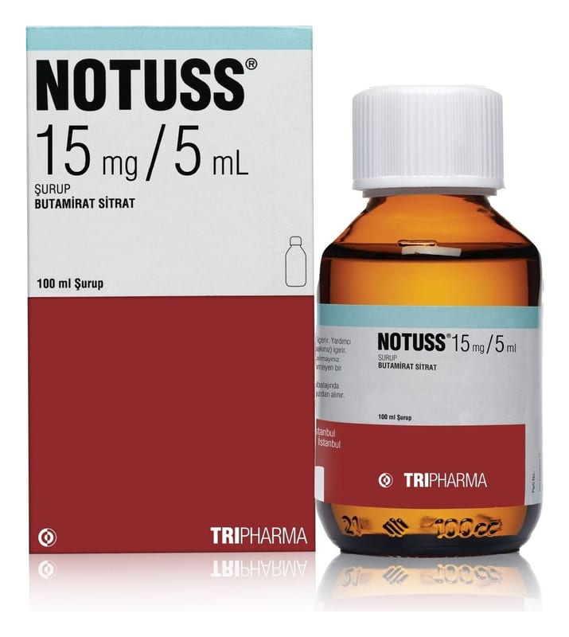

Notuss 15 mg/5 mL Şurup (100 ml)

Ne için kullanılır
KT · Bölüm 1• NOTUSS etkin madde olarak butamirat sitrat içeren, şurup formunda bir ilaçtır. • NOTUSS, “öksürük baskılayıcı ilaçlar” olarak adlandırılan bir ilaç grubuna dahildir. • NOTUSS şurup, çocuk korumalı kapaklı, bal renkli 100 ml’lik şişelerde, 5 ml’lik ölçü kaşığı ile birlikte kullanıma sunulmaktadır. • NOTUSS çeşitli nedenlerden kaynaklanan öksürüğün şikayetlere yönelik (semptomatik) tedavisinde kullanılır.